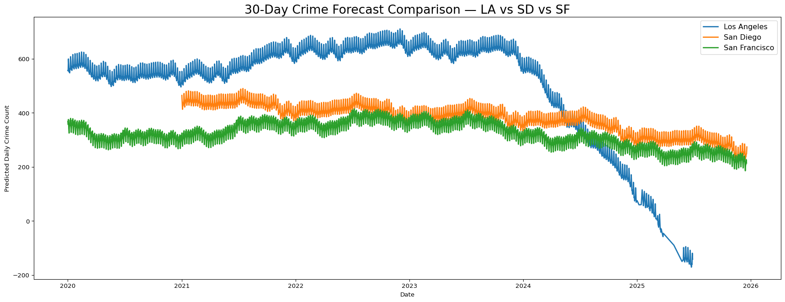
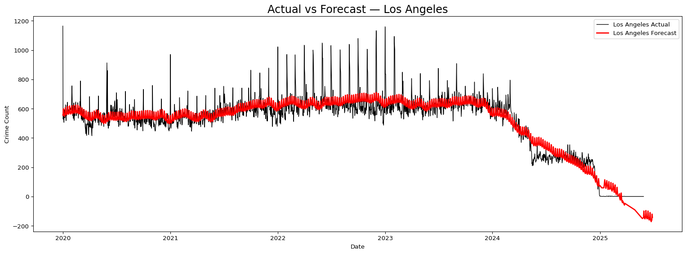

This page presents crime forecasting results for Los Angeles, San Diego, and San Francisco using the Prophet time-series model. Forecasts are generated from pre-computed Prophet outputs (CSV files), allowing us to visualize trends quickly without retraining the model.
The following visualizations include:
30-day forecast comparison across the three cities
Actual vs. predicted crime counts
Forecast confidence intervals
Seasonal components (weekly, yearly, and daily)
Before examining the forecast results, we first review the historical daily crime trends, which provide essential context for understanding the model’s predictions.
This chart shows the historical daily crime counts for Los Angeles, San Diego, and San Francisco. These baseline trends reveal long-term patterns, short-term fluctuations, and seasonality—all of which inform the Prophet model’s forecasts.
🔹 Section 2 — Prophet Modeling: Data Preparation
Code
print("Before fitting the forecasting models,\nwe convert the daily crime data into the ds–y format required by Prophet.")# ============================================================# Build correct DAILY crime counts for LA, SD, SF# ============================================================import pandas as pd# ===== 1. Load raw CSVs =====df_la_raw = pd.read_csv("data/los_angeles.csv")df_sd_raw = pd.read_csv("data/san_diego.csv")df_sf_raw = pd.read_csv("data/san_francisco.csv", low_memory=False)# ===== 2. Convert to datetime =====df_la_raw["incident_date"] = pd.to_datetime(df_la_raw["incident_date"], errors="coerce")df_sd_raw["incident_date"] = pd.to_datetime(df_sd_raw["incident_date"], errors="coerce")df_sf_raw["incident_date"] = pd.to_datetime(df_sf_raw["incident_date"], errors="coerce")# ===== 3. Drop invalid dates =====df_la_raw = df_la_raw.dropna(subset=["incident_date"])df_sd_raw = df_sd_raw.dropna(subset=["incident_date"])df_sf_raw = df_sf_raw.dropna(subset=["incident_date"])# ===== 4. Extract PURE DATE (remove hours/min/sec) =====df_la_raw["date"] = df_la_raw["incident_date"].dt.datedf_sd_raw["date"] = df_sd_raw["incident_date"].dt.datedf_sf_raw["date"] = df_sf_raw["incident_date"].dt.date# ===== 5. Group by daily counts =====daily_la = ( df_la_raw.groupby("date") .size() .reset_index(name="y") .rename(columns={"date": "ds"}))daily_sd = ( df_sd_raw.groupby("date") .size() .reset_index(name="y") .rename(columns={"date": "ds"}))daily_sf = ( df_sf_raw.groupby("date") .size() .reset_index(name="y") .reset_index() .rename(columns={"date": "ds"}))# (Fix SF: previous code mis-grouped, correct version below)daily_sf = ( df_sf_raw.groupby("date") .size() .reset_index(name="y") .rename(columns={"date": "ds"}))
Before fitting the forecasting models,
we convert the daily crime data into the ds–y format required by Prophet.
🔹 Section 3 — Model Training
Code
# ===========================================# Prophet Model Training (All Cities)# ===========================================from prophet import Prophet# Same parameters for consistencydef train_prophet_model(df): model = Prophet( daily_seasonality=True, weekly_seasonality=True, yearly_seasonality=True, interval_width=0.90 ) model.fit(df)return modelm_la = train_prophet_model(daily_la)m_sd = train_prophet_model(daily_sd)m_sf = train_prophet_model(daily_sf)print("✓ Prophet models trained successfully.")
10:51:52 - cmdstanpy - INFO - Chain [1] start processing
10:51:52 - cmdstanpy - INFO - Chain [1] done processing
10:51:52 - cmdstanpy - INFO - Chain [1] start processing
10:51:52 - cmdstanpy - INFO - Chain [1] done processing
10:51:52 - cmdstanpy - INFO - Chain [1] start processing
10:51:53 - cmdstanpy - INFO - Chain [1] done processing
✓ Prophet models trained successfully.
🔹 Section 4 — Forecast Results
Code
# ============================================================# Forecast Results — Los Angeles# ============================================================print("----- Los Angeles Forecast Result------")future_la = m_la.make_future_dataframe(periods=30)forecast_la = m_la.predict(future_la)display(forecast_la[["ds", "yhat", "yhat_lower", "yhat_upper"]].tail())# ============================================================# Forecast Results — San Francisco# ============================================================print("----- San Francisco Forecast Result------")future_sf = m_sf.make_future_dataframe(periods=30)forecast_sf = m_sf.predict(future_sf)display(forecast_sf[["ds", "yhat", "yhat_lower", "yhat_upper"]].tail())# ============================================================# Forecast Results — San Diego# ============================================================print("----- San Diego Forecast Result------")future_sd = m_sd.make_future_dataframe(periods=30)forecast_sd = m_sd.predict(future_sd)display(forecast_sd[["ds", "yhat", "yhat_lower", "yhat_upper"]].tail())
----- Los Angeles Forecast Result------
ds
yhat
yhat_lower
yhat_upper
1904
2025-06-24
-171.178043
-283.331880
-45.667750
1905
2025-06-25
-158.073769
-281.097575
-38.341810
1906
2025-06-26
-161.695290
-275.370971
-42.345830
1907
2025-06-27
-119.476412
-236.265045
-4.532973
1908
2025-06-28
-141.978940
-260.130596
-16.888489
----- San Francisco Forecast Result------
ds
yhat
yhat_lower
yhat_upper
2174
2025-12-14
185.450937
121.377882
243.578896
2175
2025-12-15
206.020712
139.880893
268.909103
2176
2025-12-16
208.902863
143.561980
270.673854
2177
2025-12-17
226.950089
167.742602
286.941981
2178
2025-12-18
213.829829
151.097148
276.893993
----- San Diego Forecast Result------
ds
yhat
yhat_lower
yhat_upper
1809
2025-12-15
243.013641
179.445841
302.437851
1810
2025-12-16
237.511433
173.395003
296.279946
1811
2025-12-17
246.504209
188.461324
304.117097
1812
2025-12-18
248.197095
190.333489
312.589467
1813
2025-12-19
273.766830
212.604669
333.618922
Code
# ============================================================# Save Forecast Results as CSV for All 3 Cities# ============================================================# Only keep the useful columnscols = ["ds", "yhat", "yhat_lower", "yhat_upper"]# LAforecast_la_out = forecast_la[cols]forecast_la_out.to_csv("data/los_angeles_forecast.csv", index=False)# SDforecast_sd_out = forecast_sd[cols]forecast_sd_out.to_csv("data/san_diego_forecast.csv", index=False)# SFforecast_sf_out = forecast_sf[cols]forecast_sf_out.to_csv("data/san_francisco_forecast.csv", index=False)# forecast_la_out.tail() # don't show on website
🔹 Section 5 — Forecast Visualization & Comparison
1️⃣ 30-Day Crime Forecast Comparison
Code
# ============================================================# Forecast Comparison — LA vs SD vs SF# ============================================================import matplotlib.pyplot as pltplt.figure(figsize=(18, 7))plt.plot(forecast_la["ds"], forecast_la["yhat"], label="Los Angeles", linewidth=2)plt.plot(forecast_sd["ds"], forecast_sd["yhat"], label="San Diego", linewidth=2)plt.plot(forecast_sf["ds"], forecast_sf["yhat"], label="San Francisco", linewidth=2)plt.title("30-Day Crime Forecast Comparison — LA vs SD vs SF", fontsize=20)plt.xlabel("Date")plt.ylabel("Predicted Daily Crime Count")plt.legend(fontsize=12)plt.tight_layout()plt.show()

The 30-day crime forecast illustrates clear differences in projected crime levels across the three cities.
Los Angeles begins with the highest predicted daily crime counts but shows a sharp downward decline approaching 2025.
San Diego remains relatively stable with moderate oscillation around its long-term mean.
San Francisco shows lower overall counts and smoother seasonal patterns, maintaining consistent levels over time.
The visible weekly seasonality bands (tight oscillations) reflect Prophet’s detection of short-term recurring patterns across all cities.
2️⃣ Actual vs Forecast CrimeCount
Code
# ============================================================# Actual vs Forecast — Los Angeles / San Diego / San Francisco# ============================================================import matplotlib.pyplot as pltdef plot_actual_vs_forecast(daily_df, forecast_df, city_name): plt.figure(figsize=(16, 6))# actual plt.plot( daily_df["ds"], daily_df["y"], label=f"{city_name} Actual", color="black", linewidth=1, )# forecast plt.plot( forecast_df["ds"], forecast_df["yhat"], label=f"{city_name} Forecast", color="red", linewidth=2, ) plt.title(f"Actual vs Forecast — {city_name}", fontsize=18) plt.xlabel("Date") plt.ylabel("Crime Count") plt.legend() plt.tight_layout() plt.show()# LAplot_actual_vs_forecast(daily_la, forecast_la, "Los Angeles")# SDplot_actual_vs_forecast(daily_sd, forecast_sd, "San Diego")# SFplot_actual_vs_forecast(daily_sf, forecast_sf, "San Francisco")

3️⃣ Forecast with Confidence Interval (yhat_lower, yhat_upper)